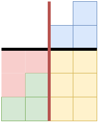

https://atcoder.jp/contests/abc255/tasks/abc255_d
i を一つ固定した時、操作の最低回数は ∑j=1N∣Aj−Xi∣ である。
Ak の順番は関係ないので、 Ak は昇順にソートしているとして良い。Ak をソートするのは最初に一回だけやれば良い。
累積和 Ck=∑j=1kAj を使って S=∑j=1N∣Aj−X∣ を次のように求める。
l=max{j∣Aj≤X} とすると S=(lX−Cl)+((CN−Cl)−(N−l)X) となる。
A=[1,2,4,5],X=3 の時、求めたいのは下の赤と青の面積で、

l=2 で赤色の部分が lX−Cl, 青色の部分が (CN−Cl)−(N−l)X に対応。
各クエリに対して2分探索するところで O(logN) 時間かかるので、O(QlogN) で全てのクエリを処理できる。
https://atcoder.jp/contests/abc255/submissions/32393722